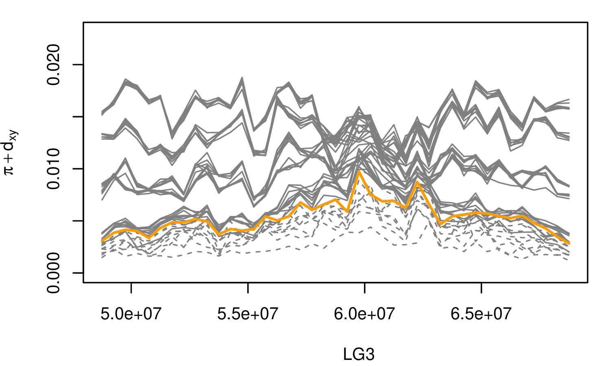
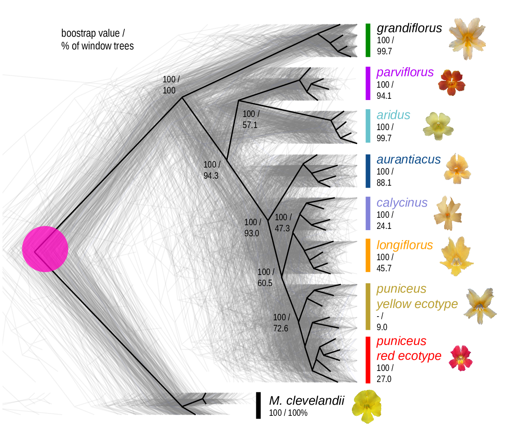

Landscapes in population genetics:
ecology, evolution, and simulation
University of Oregon // October 2019
Sickle-cell (HbS) allele frequencies

Human sickle-cell allele (HbS): (Currat et al 2002)
- Single base substitution
- provides protection against malaria (but deleterious in homozygotes)

- Dark-pigmented mammals and reptiles on volcanic outcrops in the Southwest. (Dice, Benson 1936)
- ‘Dark’ allele beneficial on outcrops, deleterious elsewhere.
- MC1R: basis is shared between species but not between populations (Nachman, Hoekstra)

- linked selection
The indirect effects of selection on genomic locations that are linked to the sites under selection by a lack of recombination.


The Mimulus aurantiacus species complex

From Widespread selection and gene flow shape the genomic landscape during a radiation of monkeyflowers, Sean Stankowski, Madeline A. Chase, Allison M. Fuiten, Murillo F. Rodrigues, Peter L. Ralph, and Matthew A. Streisfeld; PLoS Bio 2019.






\[ \begin{aligned} \pi &= \text{ (within-pop genetic distance) } \\ d_{xy} &= \text{ (between-pop genetic distance) } \end{aligned} \]

History is a sequence of trees
For a set of sampled chromosomes, at each position along the genome there is a genealogical tree that says how they are related.


Kelleher, Etheridge, and McVean introduced the tree sequence data structure for a fast coalescent simulator, msprime.
stores sequence and genealogical data very efficiently
tree-based sequence storage closely related to haplotype-matching compression
python/C
tskittools

jerome kelleher
File sizes

from Kelleher et al 2018, Inferring whole-genome histories in large population datasets, Nature Genetics


Duality, on 1000 Genomes data? Not quite…
- variation in mutation rate?
- selection?
- inference artifacts?
Tree sequence from Speidel et al 2019.

Erik Lundgren: “Isolation By Coalescence”
- fits a discrete random walk model to lineage movement
- genetic distance \(\approx\) mean coalescence time

Populus trichocarpa and P. balsamifera data from Moreno Geraldes et al 2014
- glacial refugia
- postglacial expansion
The main idea
If we record the tree sequence that relates everyone to everyone else,
after the simulation is over we can put neutral mutations down on the trees.
Since neutral mutations don’t affect demography,
this is equivalent to having kept track of them throughout.
From Kelleher, Thornton, Ashander, and Ralph 2018, Efficient pedigree recording for fast population genetics simulation.
and Haller, Galloway, Kelleher, Messer, and Ralph 2018, Tree‐sequence recording in SLiM opens new horizons for forward‐time simulation of whole genomes


A 100x speedup:

The data
Simulations
- \(N=10,000\) diploids
- burn-in for \(10N\) generations
population split followed by period sampling, with:
- neutral
- background selection
- selection against introgressed alleles


Example: three samples; two trees; two variant sites